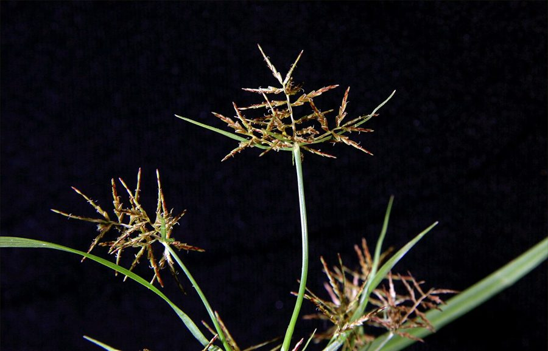

स्लेंडर साइपरस घासSlender Cyperus
Cyperus distans · Cyperaceae · FLR-0331

- Scientific name वैज्ञानिक नाम
- Cyperus distans L.f.
- Family कुल
- Cyperaceae
- Hindi हिंदी
- स्लेंडर साइपरस घास
- Local names स्थानीय नाम
- slender cyperus, pani motha, slender sedge, motha
- Status here यहाँ की स्थिति
- native
- Movement आवागमन
- Resident, here all year
- Known from कहाँ दर्ज
- Others have published records from the wider Awadh–Purvanchal plain, none yet from Basti–Ayodhya अवध–पूर्वांचल से दूसरों के प्रकाशित अभिलेख, बस्ती–अयोध्या से अभी नहीं
- IUCN IUCN
- not evaluated
- Review समीक्षा
- not yet reviewed
When to look कब देखें
Present all year. साल भर मौजूद।
Uses and possibilities उपयोग और संभावनाएँ
“Traditional medicine” means a documented traditional use, not a claim that it works. Nothing on this page is medical advice.
Drawn from the documented uses in the profile below, where each is labelled traditional, current or a research lead. All uses →
Tell it apart from इनसे अलग पहचानें
स्लेंडर साइपरस घास / Slender Cyperus
Cyperus distans L.f. — Cyperaceae
स्लेंडर साइपरस घास — उत्तर भारत के दलदलों, नालों और धान के खेतों के किनारों पर उगने वाली एक मध्यम से बड़ी, सुंदर मोथा-वर्गीय दलदली घास, जिसे 'पानी मोथा' भी कहा जाता है। इसका तना त्रिकोणीय होता है और इसके सिरे पर छतरीनुमा खुली हुई डालियों पर बहुत पतली, लाल-कत्थई रंग की लंबी बालियाँ दूर-दूर बिखरी रहती हैं। इसकी जड़ें दलदली मिट्टी को बाँधने में सहायक होती हैं।
Quick Identification त्वरित पहचान
| Feature | Description |
|---|---|
| Habit | Tufted perennial sedge 35–100 cm tall rising from short creeping stolons (Clarke 1893) |
| Culms | Stiffly erect, sharply triquetrous (triangular), 2–5 mm thick, smooth, leafy at base (Clarke 1893) |
| Leaves | Basal, linear, 20–60 cm long, 4–10 mm wide, coriaceous, channelled with scabrid margins (Duthie 1915) |
| Inflorescence | Large, open, compound or decompound umbellate anthela 10–30 cm across (Clarke 1893) |
| Spikes | Loose, pyramidal or oblong; spikelets widely spaced (distant) along the slender zig-zag rachis (Clarke 1893) |
| Spikelets | Acicular or linear, 10–30 mm long, very slender (1 mm wide), reddish-brown, 10–30 flowered (Clarke 1893) |
Field tip: Look along wet ditch banks and paddy channels in autumn for a triangular-stemmed sedge bearing a huge, airy, reddish-brown floral spray composed of needle-thin spikelets spaced widely apart.
हिंदी — कैसे पहचानें: तिकोना तना, चौड़ी हरी पत्तियाँ, और सिरे पर खुली छतरी जैसी बहुत बड़ी बाली जिसमें सुई जैसी पतली लाल-कत्थई बालियाँ दूर-दूर लगी होती हैं।
Morphology शारीरिक संरचना
Biometrics (Clarke 1893; Duthie 1915):
| Measurement | Range |
|---|---|
| Culm height | 35–100 cm (Clarke 1893) |
| Culm thickness | 2–5 mm (Clarke 1893) |
| Leaf blade length | 20–60 cm (Duthie 1915) |
| Leaf blade width | 4–10 mm (Duthie 1915) |
| Inflorescence width | 10–30 cm (Clarke 1893) |
| Spikelet length | 10–30 mm (Clarke 1893) |
| Spikelet width | 1.0–1.5 mm (Clarke 1893) |
| Nutlet length | 1.3–1.6 mm (Clarke 1893) |
Culms and rhizomes: Culms solitary or loosely tufted, sharply three-angled, smooth, glabrous, striate, arising from a short woody rhizome producing slender, scaly creeping stolons.
Leaves: Several, basal, mostly shorter than the culm; sheaths purplish-brown, membranous on the ventral side. Leaf blades flat, flaccid or subcoriaceous, linear-acuminate, bright green above, paler beneath, margins and midrib scabrid towards apex.
Inflorescence and spikelets: Involucral bracts 4–6, leaf-like, patent, the lowest much exceeding the inflorescence (Clarke 1893). Rays 5–12, slender, unequal, up to 15 cm long (Clarke 1893). Spikes loose; spikelets widely spreading or reflexed, distant on a flexuous rachilla, linear-cylindric, slightly compressed, 10–30 flowered, dark reddish-brown. Glumes oblong-elliptic, obtuse, appressed. Style 3-cleft. Nutlet trigonous, oblong-ellipsoid, apiculate, dark brown to blackish.
हिंदी: तने तीन कोनों वाले और तगड़े होते हैं। पत्तियाँ चौड़ी और नीचे से बैंगनी-भूरी होती हैं। बालियों की डालियाँ बहुत लंबी होती हैं और दाने त्रिकोणीय व गहरे भूरे होते हैं।
Behaviour & Ecology व्यवहार एवं पारिस्थितिकी
Cyperus distans is a perennial wetland helophyte adapted to saturated soils, shallow drainage ditches, and waterlogged agrarian margins. It maintains active growth through monsoonal flooding by deploying creeping stolons that run beneath soft silt.
The distinctively distant arrangement of slender spikelets along the rachis allows maximum wind access for effective cross-pollination. The tripartite feathery stigmas emerge during calm morning hours to capture wind-borne pollen. The trigonous nutlets detach easily upon maturity and float along slow-moving canal currents, settling on exposed muddy margins as seasonal waters recede.
हिंदी: यह पौधा दलदली मिट्टी में अपनी जड़ों और गांठों के सहारे फैलता है। इसके तने मजबूत होते हैं और हवा के माध्यम से इसका पराग फैलता है। पानी के बहाव के साथ इसके बीज नए स्थानों तक पहुँचते हैं।
Life Cycle / Phenology जीवन चक्र एवं ऋतुचक्र
| Period | Phenological Event |
|---|---|
| June–July | Stolon buds and buried nutlets sprout vigorously with early monsoon rain saturation |
| August–September | Culms shoot upward and massive open compound umbels develop above the leafy base |
| October–December | Spikelets turn deep reddish-brown and shed mature blackish trigonous nutlets |
| January–May | Upper foliage dries partially during winter; underground stolons survive in damp mud |
Underground stolons maintain dormancy during dry spring intervals, regenerating vegetative tillers upon subsequent monsoon rewetting.
हिंदी: आषाढ़ की बारिश में नई कोपलें फूटती हैं। भादों-क्वांर में बड़ी छतरीदार बालियाँ निकलती हैं और अगहन-पूस में बीज पककर मिट्टी में मिल जाते हैं।
Associated Species / Interactions संबद्ध प्रजातियाँ एवं पारस्परिक क्रियाएं
- Waterfowl: Teals, pintails, and snipes forage around sedge bases for fallen nutlets and aquatic worms.
- Invertebrates: Sedge aphids and chrysomelid beetles feed on tender flowering rays.
- Wetland Associates: Co-occurs along drainage ditches with Forked Fimbry, Nutgrass, and Asian Watergrass.
हिंदी: दलदली चिड़ियाँ इसके झुरमुटों में कीड़े और बीज तलाशती हैं और यह अन्य मोथा प्रजातियों के साथ मिलकर उगती है।
Pests and Diseases कीट एवं रोग
- Rust caused by Puccinia cyperi produces reddish-brown pustules on the lower surfaces of mature leaf blades.
- Sedge gall midges occasionally induce swelling on developing spikelet florets.
- Root rot occurs when stagnant water becomes contaminated with anaerobic organic waste.
हिंदी: अधिक उमस वाले मौसम में पत्तियों पर गेरुई रोग के लाल-भूरे धब्बे आ सकते हैं।
Agricultural / Human Relevance कृषि एवं मानवीय उपयोगिता
Agrarian and Wetland Craft Uses:
- Paddy field weed. A prevalent perennial sedge weed of wetland rice fields, drainage lines, and canal banks, requiring mechanical or manual weeding in early crop stages.
- Soil stabilization. Creeping stolons effectively knit together fragile earthen banks along drainage cuts and prevent monsoon water erosion.
- Mat weaving and cordage. Dry culms are occasionally gathered and split for rough rural matting, basket filler, and temporary twine.
- Traditional medicine. Root decoctions have documented uses in classical Unani and Ayurvedic traditions for cooling feverish heat and soothing intestinal irritation (Kirtikar & Basu 1935). This is a record of traditional use, not medical advice.
Today. It is recognized as an ecologically beneficial native wetland sedge that traps sediment and filters excess nutrients in rural agrarian watersheds.
हिंदी: धान के खेतों में यह खरपतवार के रूप में उगती है लेकिन इसकी जड़ें नहरों और नालों की मिट्टी को बहने से रोकती हैं। पारंपरिक रूप से इसके सूखे तनों से चटाई और टोकरियां बनाई जाती थीं।
Expected Locally स्थानीय संभावना एवं उपस्थिति
Not a field record. Written from published accounts for eastern Uttar Pradesh. No confirmed local sighting yet — if you have seen it, that is what the atlas needs.
अभी तक स्थानीय पुष्टि नहीं। यह विवरण प्रकाशित स्रोतों से है, किसी अवलोकन से नहीं।
Expected in eastern Uttar Pradesh along perennial ditch margins, low-lying paddy edges, oxbow lake borders, and riverine marshlands across Basti and Ayodhya. GBIF holds published records from the wider Awadh–Purvanchal plain, none yet from Basti–Ayodhya. A first local record would be a dated photograph of the spikelets, inflorescence, or foliage, submitted with locality details through the project's About page.
Distribution भौगोलिक वितरण
Global range: Pantropical and subtropical; widespread across Africa, southern Asia, Southeast Asia, Australia, and the Americas.
In India: Abundantly distributed in wetlands and moist waste places across Assam, West Bengal, Bihar, Uttar Pradesh, and peninsular India (Clarke 1893).
In Uttar Pradesh: Common in marshes, ditches, and riverbanks of the Gangetic and tarai plains (Duthie 1915).
In Basti district / eastern UP: Expected in marshy depressions, canal edges, and waterlogged rice fields.
हिंदी: यह पूरे भारत और विश्व के सभी गर्म आर्द्र मैदानों के तालों और दलदलों में पाई जाने वाली सामान्य सेज है।
Research Questions शोध प्रश्न
- How does Cyperus distans compare to Cyperus rotundus in nutrient competition with transplanted paddy? / धान के खेत में पोषक तत्वों की प्रतिस्पर्धा में यह सामान्य मोथा की तुलना में कितना प्रभाव डालती है?
- Which wetland birds feed most actively on its dark trigonous nutlets in winter marshes? / सर्दियों के दलदलों में कौन-से पक्षी इसके त्रिकोणीय बीजों को सबसे अधिक आहार बनाते हैं?
- What is the vegetative spread rate of creeping stolons in saturated versus well-drained soils? — Measure stolon elongation across controlled soil moisture plots.
- How do seasonal flood levels affect inflorescence height and spikelet branching patterns? — Compare plants across shallow ditches versus deep marsh margins.
- Does the plant harbor beneficial mycorrhizal fungi that aid phosphorus uptake in low-nutrient mud? / क्या इस पौधे की जड़ों में ऐसे कवक पाए जाते हैं जो दलदली मिट्टी से फॉस्फोरस सोखने में मदद करते हैं?
Similar Species समान प्रजातियाँ
| Species | How to tell apart | हिंदी |
|---|---|---|
| Nutgrass (Cyperus rotundus) | Produces aromatic round tubers; spikelets clustered in short spikes, not distant | मोथा, गोल सुगंधित गांठें, घनी बालियाँ |
| Forked Fimbry (Fimbristylis dichotoma) | Leaves basal with ciliated ligule; spikelets ovate spirally imbricate; nutlet biconvex | पत्ती पर रोएं, बालियाँ अंडाकार |
| Tall Cyperus (Cyperus exaltatus) | Much larger robust sedge; spikelets crowded densely in cylindrical spikes | बहुत बड़ा साइपरस, घनी बेलनाकार बालियाँ |
Field rule: Triangular-stemmed perennial sedge with an open, spreading compound anthela bearing linear needle-like reddish-brown spikelets spaced widely apart along a zig-zag rachis identifies Cyperus distans.
Taxonomy & Classification वर्गिकी एवं वर्गीकरण
Original description. Described by Carl von Linnaeus the younger in 1782 in Supplementum Plantarum, p. 103. The specific epithet distans refers to the widely spaced, distant spikelets along the spike rachis.
Subspecies. Monotypic — recognized as Cyperus distans without formal infraspecific divisions across its pantropical distribution.
Family and order placement. Belongs to the sedge family Cyperaceae, subfamily Cyperoideae, tribe Cypereae, in the order Poales.
Phylogenetic notes. Cyperus is a vast cosmopolitan genus of approximately seven hundred species, distinguished by distichous spikelet glumes and terminal umbellate anthelas.
IUCN status rationale. Not evaluated in the master expansion list; it is widespread, abundant, and under no conservation concern across global tropical wetlands.
हिंदी: इसका वैज्ञानिक नाम 1782 में कार्ल लिनिअस के पुत्र द्वारा दिया गया था। लैटिन नाम 'डिस्टेंस' का अर्थ 'दूर-दूर' है, जो इसकी बालियों के बिखरे हुए स्वरूप को दर्शाता है।
Photo Gallery छायाचित्र दीर्घा
No photos yet — add field photos to media/species/slender_cyperus/ and run node scripts/sync_photos.js.
Photos needed आवश्यक फोटो
- [ ] Clump habit in a marshy ditch showing triangular stems (दलदली नाले में उगी घास का तिकोना तना)
- [ ] Open spreading umbel showing widely spaced reddish spikelets (खुली छतरीनुमा लाल-कत्थई बालियों का दृश्य)
- [ ] Detail of needle-like spikelets along the zig-zag rachis (बारीक सुई जैसी दूर-दूर लगी बालियाँ)
References संदर्भ सूची
- Linnaeus, C. von (filius) (1782). Supplementum Plantarum, p. 103. Brunsvigae: Orphanotrophei.
- Clarke, C.B. (1893). Cyperaceae in Hooker, J.D. (ed.), The Flora of British India, vol. 6, pp. 607–608. L. Reeve & Co., London.
- Duthie, J.F. (1915). Flora of the Upper Gangetic Plain and of the Adjacent Siwalik and Sub-Himalayan Tracts, vol. 3, part 3, pp. 331–332. Government Printing, Calcutta.
- Kern, J.H. (1974). Cyperaceae in van Steenis, C.G.G.J. (ed.), Flora Malesiana, ser. 1, vol. 7, part 3, pp. 610–611. Noordhoff International Publishing, Leiden.
- Kirtikar, K.R. & Basu, B.D. (1935). Indian Medicinal Plants, 2nd ed., vol. 4, pp. 2640–2641. Lalit Mohan Basu, Allahabad.
- GBIF Occurrence Data — Cyperus distans L.f., India (2025).
Source file: species/flora/grasses/slender_cyperus.md